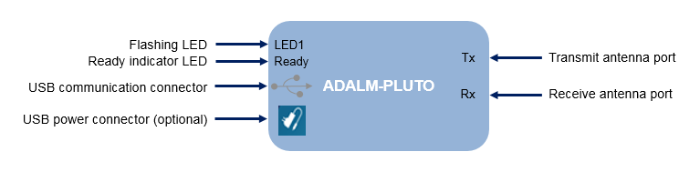

To implement the features in the Communications Toolbox™ Support Package for Analog Devices® ADALM-Pluto Radio, you must establish communication between the host and the radio hardware.
This topic describes the automatic guided host-radio hardware setup process for Windows®, Linux®, and OS X operating systems.
Third-party tools required by the I/O mode features are automatically downloaded and installed during the support package installation.
To complete the setup process manually, see Manual Host-Radio Hardware Setup.
Note
Because the setup process runs operating system commands for installing USB drivers, you must have administrator privileges for the radio hardware setup. Start MATLAB® using Run as administrator.
The automatic hardware setup process guides you through several steps. If you have to cancel the setup process, you can open it again from the Add-On Manager window. To confirm that you have the correct configuration for your the host machine, the correct radio hardware, and all required accessories, complete these checklists.
Administrator privileges — Because the software runs operating system commands for installing USB drivers, you must have administrator privileges for the guided radio hardware setup. If you see the User Account Control window, click Yes to continue with the setup process.
USB connection between ADALM-PLUTO radio and host computer — This connection is necessary for sending and receiving signals to and from the radio. It is also used for updating the AD936x SDR configuration from the host computer.
ADALM-PLUTO radio
USB communication cable
USB power cable (optional)
Antennas or a loopback cable
On the MATLAB Home tab, in the Environment section, click Add-Ons > Manage Add-Ons.
In the Add-On Manager window, select the Communications Toolbox Support Package for Analog Devices ADALM-Pluto Radio, and click Install.
During the installation, you might be required to acknowledge and accept software licensing agreements from MathWorks and third-parties.
The Download and Installation Progress window provides a list of the installation steps and progress status. After the support package software installation completes, you might be asked to configure your radio for use with MATLAB. Click Setup Now to open the Hardware Setup window.
In the Hardware Setup window, click Next and you are guided through these pages to setup your radio.
Connect Hardware
Confirm that all connections for the ADALM-PLUTO radio are complete.

Connect the USB communication cable from the host computer to the radio.
Connect the antennas to the transmit and receive antenna ports. Alternatively, connect a loopback cable connecting the transmit port to the receive port.
(Optional) Connect a USB power cable to a USB power hub of the ADALM-PLUTO radio. This step is recommended if:
You plan to operate the radio at or near maximum gain settings continuously.
PlutoSDR is unresponsive or commands fail especially when the radio is connected to a unpowered USB hub.
Wait until you see the Ready indicator LED lit steady and LED1 flashing.
Click Next to continue.
Test ADALM-PLUTO Radio Connection
Click Test Connection.
After the connection test completes, green check marks () indicate successful completion of the connection testing. Click Next to continue.
A red X mark ( ) next a test step indicates a failure occurred during the radio connection test. To continue installation, follow the What to Consider instructions.
If you still get an error you cannot resolve, see Common Problems and Fixes.
Hardware Setup Complete
When the hardware setup is successfully completed, click Finish to begin using your ADALM-PLUTO radio.